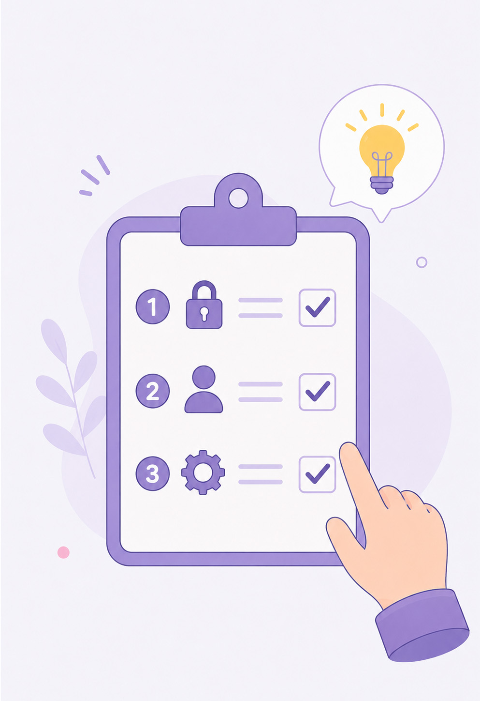

Étape 6
Réagir en cas d'incident
Savoir réagir dans l'ordre face à un incident : premières actions, signalement, erreurs à éviter.
Visuel à venir
assets/hero-etape5.jpg

Changement de ton
« Jusqu'ici on a appris à éviter les pièges. Mais une personne bien entraînée sait aussi
quoi faire quand ça arrive quand même — parce que ça peut arriver à tout le monde, y compris aux experts.
La honte ne protège de rien ; les bons réflexes, si. »
Les deux erreurs à ne jamais commettre :
n°1 — ne rien dire par honte : la victime n'est jamais coupable, les arnaques sont conçues par des professionnels pour fonctionner.
n°2 — payer une rançon : ça ne garantit rien et ça finance la suite.
Exercice 1 — la procédure dans l'ordre
La procédure universelle compte 5 réflexes. Touchez-les dans l'ordre — du premier au dernier.
Exercice 2 — les scénarios
Votre équipe tire 2 scénarios (ou faites-les tous). Pour chacun : écrivez les 3 premières actions, dans l'ordre — puis comparez avec la correction.
LA ressource à retenir : Safeonweb
safeonweb.be — le site officiel belge du Centre pour la Cybersécurité :
- l'actualité des arnaques en cours en Belgique ;
- un test pour s'entraîner à repérer le phishing ;
- l'application d'alerte Safeonweb.
C'est LE point de repère à garder après la formation.
Livrable — ma procédure « Je fais quoi d'abord ? »
Ces contacts partent avec vous, format carte de portefeuille :
Card Stop
078 170 170
24 h/24 — carte volée, données bancaires compromises
078 170 170
24 h/24 — carte volée, données bancaires compromises
Signalement
suspect@safeonweb.be
transférer le message suspect, puis le supprimer
suspect@safeonweb.be
transférer le message suspect, puis le supprimer
Référence
safeonweb.be
arnaques en cours, tests, application d'alerte
safeonweb.be
arnaques en cours, tests, application d'alerte
Argent perdu / identité volée
Ma banque + plainte à la police locale
avec les preuves (captures d'écran)
Ma banque + plainte à la police locale
avec les preuves (captures d'écran)